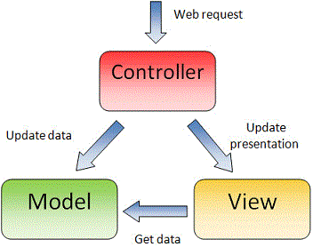

MVC 设计模式
1.现实生活中的MVC
- 现实生活中的分工合作案例 -- 大饭店
- 采购：负责原材料采购.
- 小工: 打杂,洗菜,洗碗.
- 厨师: 切菜 炒菜
- 服务员：端菜 迎宾
- 收银员: 收钱.
- 店长: 指挥协调其它人员工作.
- 在一些街边小饭馆其实这些事情完全是交给一个人去做 --> 老板
- 对比一下这两种经营方式的区别
- 大饭店: 正规,分工合作,各司其职,效率高.
- 小饭馆: 不正规,慌乱.效率低下.
- 同样的事情两种实现方式
- 都是将客人点的菜展示到餐桌上.
- 不同的单位使用了不同的流程.
- 大饭店: 每个人负责1个流程.高效并且可维护程度极高. 挂了1个人,不影响其它人.只换这1个人就可以.
- 小饭馆: 1个人负责整个流程,效率低下并且可维护程度极低,老板挂了,饭馆就得关门.
- 由此可见,分工是多么的重要
2.代码中的MVC
- 实际上,我们写网站的过程,和开饭店的原理和流程极其相似,我们写网站是将数据展示到页面上.
- 目前,我们写代码都是一股脑的将所有的代码写在一起,这样去写固然没有什么问题，因为你终究还是将效果实现了.
- 但是这样做的后果是可怕的,随着项目越来越大,你的代码将变得非常难以维护.
- 为了让我们的代码更加容易的维护,也为了使得我们的代码层次更加分明
- 我们将我们的代码分为三部分
- M - Model 数据 数据实体,用来保存页面要展示的数据.
- V - View 视图 负责显示数据的,一般其实就是指的html页面.
- C - Controller 控制器 控制整个业务逻辑,负责处理数据,比如数据的获取,以及数据的过滤，进而影响数据在视图上的展示.
- 这样,这3部分各司其职,分工合作,我们的代码就会变得更有层次并容易维护.
- 这样的程序设计模式,我们就叫做MVC设计模式.
- 所以,MVC并不是一个新的知识点,而是一个新的写代码的套路.

- MVC是由后端而来,由于受到前端技术的限制便有了一些细节的调整，进而出现了很多MVC的衍生版（子集）如MVVM、MVW、MVP、MV*等。
注：做为初学可以不必过于在意这些概念。